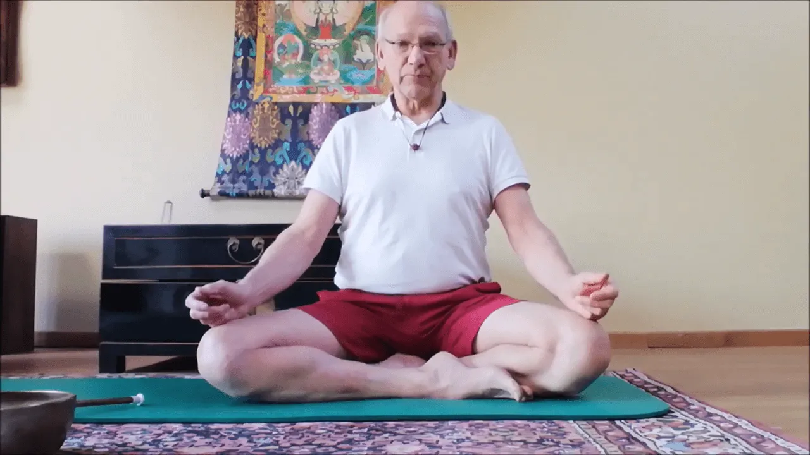

Mucho se habla por estos días sobre “salir de la zona de confort”… y claro, como no hacerlo si estábamos acostumbrados a llevar una vida socialmente activa y ahora, nos vemos en la obligación y deber, de quedarnos en nuestras casas, para tratar de contribuir a la no propagación de esta pandemia que afecta nuestro planeta entero…
Y a propósito de lo mismo, aquí les quiero compartir un video que ha realizado mi suegro @Thierry Van Brabant, desde su centro de yoga en Bélgica Santosha - Centre de Yoga, donde diariamente asistían muchos alumnos y alumnas y que hoy, cerrado por la cuarentena obligatoria que hay en el país, ha decidido sentarse frente a una cámara y realizar una clase de yoga para sus alumnos y para todos quienes quieran realizar esta secuencia de activación (Pawanmuktasana), para todos los niveles.
Este video está en francés, pero para leer la traducción en español, solo debes:
- ir a subtítulos y marcar la opción: traducción automática
- luego marcar la opción: configuración
- ir a subtitulos y marcar la opción: traducción automática
- elegir en que idiomas quieres leer la clase
Espero que la disfruten!
Un abrazo 💚🙏
Carmen
